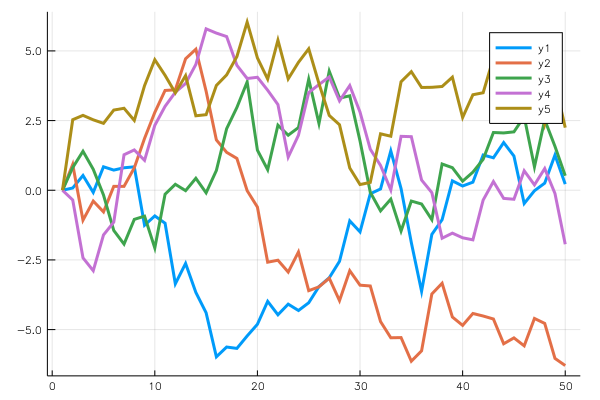

vignettes/Julia_in_RMarkdown.Rmd
Julia_in_RMarkdown.RmdTo use JuliaCall package for julia engine in R Markdown document, just set the language of the code chunk to be julia.
## This is a julia language chunk.
## In julia, the command without ending semicolon will trigger the display
## so is JuliaCall package.
## The julia display will follow immediately after the corresponding command
## just as the R code in R Markdown.
a = sqrt(2);
a = sqrt(2)## 1.4142135623730951Plots.jl
Plots.jl is an easy to use and powerful julia package for plotting, see https://github.com/JuliaPlots/Plots.jl for more detail.
## Plots.GRBackend()
And you can also get access to julia variables in R code chunk quite easily using JuliaCall, for example:
library(JuliaCall)
## This is a R language chunk.
## In the previous julia chunk, we define variable a,
## we can use functions in JuliaCall to get access to it.
julia_eval("a")## [1] 1.414214